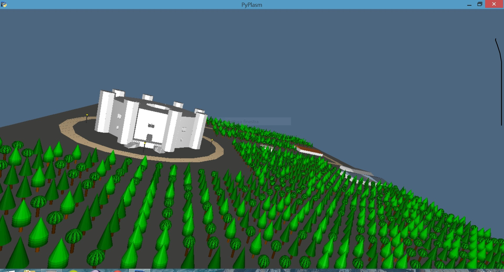

1. Castel del Monte
2. Loris Marsico
3. 438549
Link di riferimento:
http://it.wikipedia.org/wiki/Castel_Del_Monte
http://www.casteldelmonte.beniculturali.it
Breve descrizione del lavoro
Ho cercato di ricreare le principali componenti del Castel del Monte e del paesaggio circostante.
Per il primo esercizio ho ricreato le componenti orizzontali e le mura portanti, nel dettaglio i piani del castello e le mura perimetrali esterne e interne.
Per il secondo esercizio ho ricostruito le componenti verticali del castello, quindi ho ricreato le torri poste perimetralmente al castello, le mura perimetrali e le pareti che dividono le varie sale. Inoltre ho ricreato le scale d'accesso, i portoni e le finestre.
Per il terzo esercizio ho ricostruito in modo semplificato il vicinato, andando a ricreare le poche abitazioni posizionate nelle vicinanze.
Infine per il quarto esercizio ho ricostruito la boscaglia e l'urbanistica della zona.
Link alle immagini di riferimento
fig01.jpg
 fig02.jpg
fig02.jpg
 fig03.jpg
fig03.jpg
 fig04.jpg
fig04.jpg